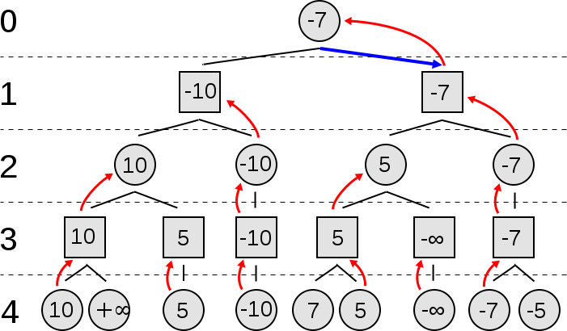
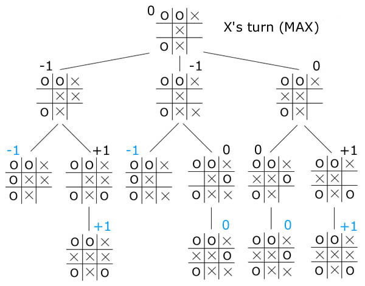

Tic Tac Toe with Artificial intelligence using Minimax search algorithm.
What is Minimax?
Minimax is a recursive algorithm that is used to find the most optimal move in a two player zero sum perfect information game such as tic tac toe, connect four, checkers and chess. Zero sum game means that each player gain or loss is equally balanced by the loss or game of the other player. Perfect information just means that the game doesn’t have any element of chance like Poker or Yahtzee.
How does it work?
Minimax works by looking ahead checking each possible game move and then determining the best move to make by a heuristic evaluation function. When you play tic tac toe before you choose a square you try to look ahead to see if that move will lead you to a victory or block the chance of your opponent getting a victory. You are sort of making a search tree in your head and then traversing different paths down the tree to find the best move to maximize your chance of winning and minimize the opponent’s chance of winning.
Minimax works the same way but it can look ahead a lot further then a human. Minimax uses a tree in which the top level of the tree represents the maximizing player. Minimax max moves in a depth first search descending left most. In the image below max player is shown as a circle and the min player (AI) is represented as a square. The leaf nodes at the bottom of the tree is calculated by a heuristic evaluation function. For tic tac toe I chose to represent moves that lead to a maximizing player victory to 1 and moves that leads to a minimizing player to win -1. The goal of minimax is to minimize its chance of losing and maximizing its chance of winning by maximizing the opponent’s chance of losing and minimizing the opponents chance of winning. Searching all moves down a tree is achievable in tic tac toe because the amount of possible moves is under 300,000 but for a game like chess it takes 10^123 known as the Shannon number. There are more moves in chess then there is atoms 10^80 in the observable universe!
 |
 |
Check out this great video on Game Theory from Computerphile
Grab code from GitHub
How to make Minimax more efficient.
Although Minimax checks for the best possible move it needs to check every node of the tree to find the best possible move. Alpha-beta pruning is an algorithm that can be applied to minimax to decrease the amount of nodes it evaluates down the search tree. For alpha beta-pruning, Alpha represents the maximum score and beta represents the minimum score. Alpha/Beta are both initialized with the worst possible score for both players. We use both Alpha and Beta to prun the tree by checking to see if alpha is greater or equal to beta.

REFERENCES & RESOURCES
"Beej's Bit Bucket." Minimax. Sat. 21 April 2017.
"CSCI 6350 Artificial Intelligence: Minimax and Alpha-Beta Pruning Algorithms and Psuedocodes." YouTube. YouTube, n.d. Sat. 21 April 2017.
Wikipedia. Wikimedia Foundation, n.d. Sat. 21 April 2017.
"An Exhaustive Explanation of Minimax, a Staple AI Algorithm." An Exhaustive Explanation of Minimax, a Staple AI Algorithm. N.p., n.d. Sat. 21 April 2017.